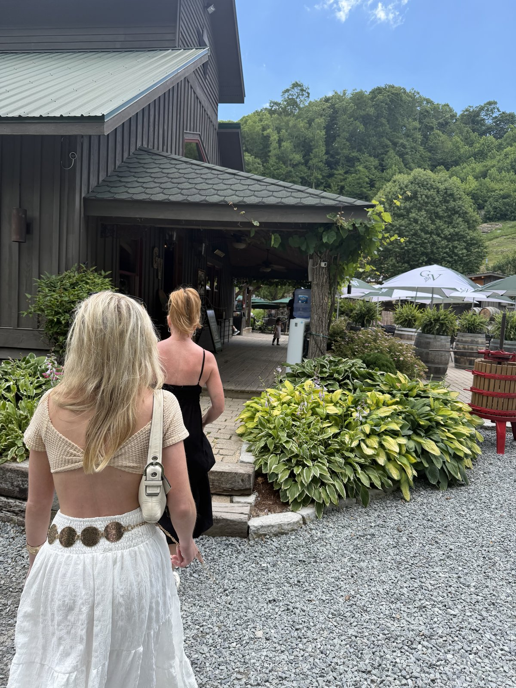
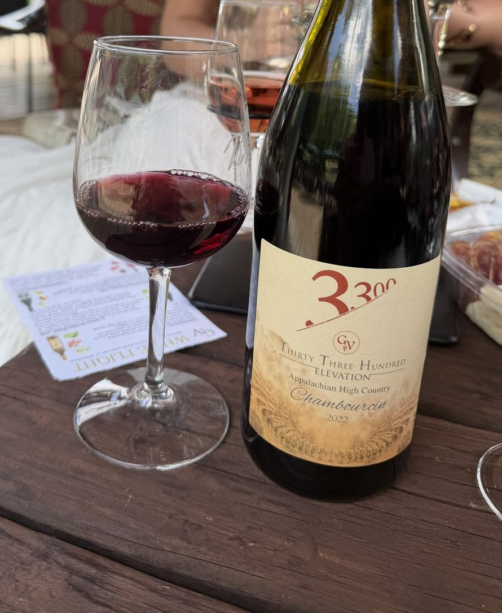
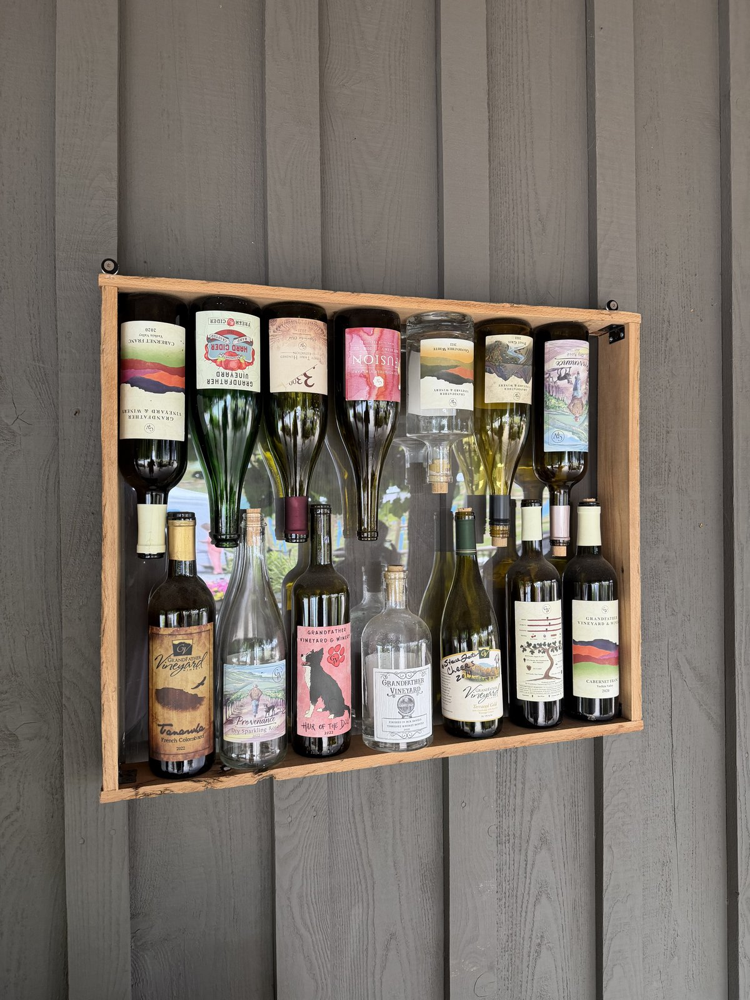

Mara has a way of deciding things. A text on Tuesday that said the mountain was calling and she had already checked the weather, which meant the day was mostly settled before I answered. Caleb took the kids down to the river so I could go. That is the kind of trade a marriage runs on, and I have stopped keeping score of who owes who.
We drove up the hill toward Banner Elk, past Boone, into the country where I went to school and later stood in front of a room of third graders. The air drops the higher you go. By the time we found the vineyard, the heat we had left down in the valley felt like someone else's problem.
Grandfather Vineyard sits right down on the Watauga, terraced into the slope at the foot of the mountain. There is a gravel patio along the creek, umbrellas leaning over the tables, water going by loud enough that you lean in to talk. Children were turning over rocks at the edge of the stream. A dog slept under the next table like he owned the deed.

They pour a Chambourcin there called Thirty-Three Hundred. The number is the elevation. That is the whole story of the wine, if you want it. A grape stubborn enough to make it through a mountain winter, grown on a slope you can see from your chair, poured a mile up a river I have known my whole life.

First tasted it at the Filling Station, of all places. Ordered it because I did not recognize the name, and Caleb reached for the beer the way he always does. It stayed with me enough that when Mara said mountain, this is where I steered us.
We ordered a bottle and some meat and cheese and did not hurry. Mara talked about Boone and the people we both still know up there. I watched the creek do what creeks do. Somewhere in the second glass I remembered that I used to live twenty minutes from here and had somehow forgotten to come back.
The wine was good. Not good-for-North-Carolina, which is a thing people say like they are doing you a favor. Just good. Dark and a little rough at the edges in a way I liked, the way the best things up here tend to be.

We bought two bottles for the porch on the way out. One will not last the week. The other I am hiding, because a wine that tastes like the place it came from is worth saving for a night that earns it.